Getting the Flash Element to Show Your Score
The following explains how to execute the function we exposed in the Flash UI ActionScript, with a parameter to alter the value shown in the textbox using visual scripting nodes; these nodes are are generated by reading the UI Elements XML we've previously modified in this tutorial.
For this we will take the UI element that we displayed in Chapter 3 - UI Elements and then extend the functionality using the function we defined in the UI Element XML itself.
Executing the Function
Follow the steps below to execute your function to set the value shown in the dynamic textbox of the UI Element:
It is not recommended to mix the Flow Graph and Schematyc (Experimental) approaches as them sharing UI Element instances can lead to confusing results and issues that are hard to track.
Flow Graph
- Find the node in Flow Graph located at Add Node → UI → Functions → uiQuickStart → UpdateScore and add it to your graph.
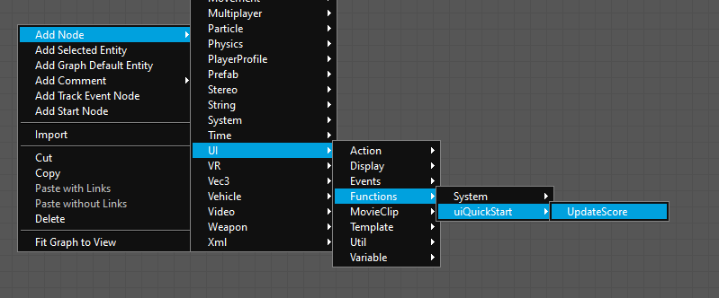
UpdateScore - Connect the Call input to a node of your choice; in this case we are using the Add Node → Debug → InputKey node with its Key input set to the F key.
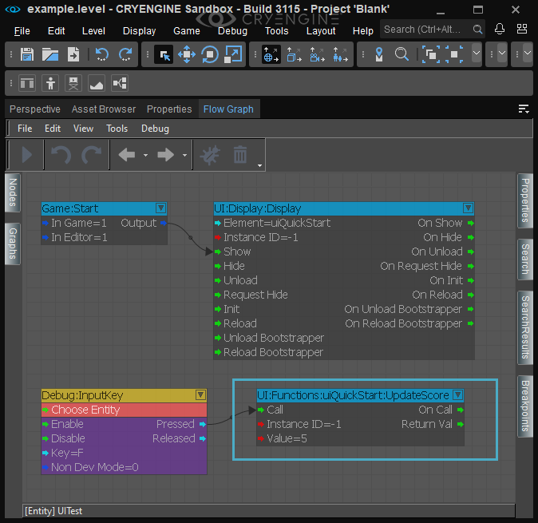
Connect the Call input to a node of your choice. - Finally, specify a number for the Value parameter of the UpdateScore node and save the graph.
Schematyc (Experimental)
- First, add an Input component to your uiquicktest entity.
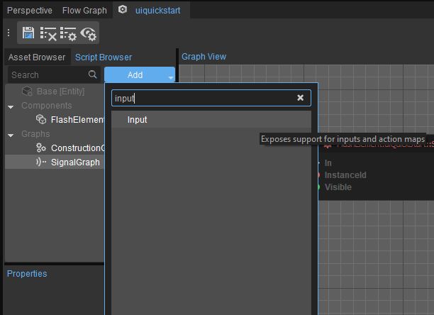
Input Component - Then, add a Functions → Components → Input → RegisterKeyboardAction node to your graph and hook it up to the Start node.
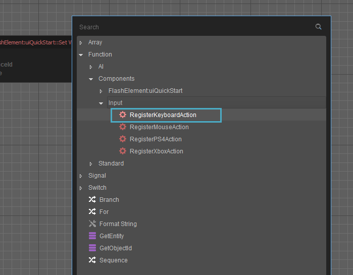
RegisterKeyboardAction node - Set the Group Name and Name input properties of the RegisterKeyboardAction node to ui_input and show_ui respectively. Also set Input Id to F and check Receive Press Events.
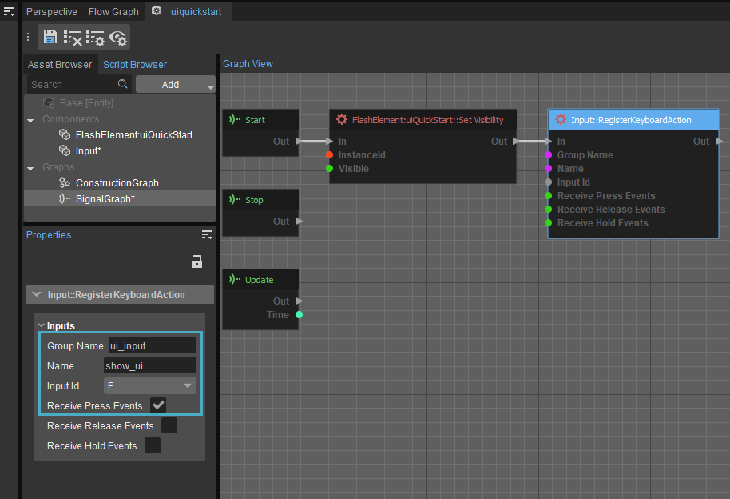
Set the inputs of the node as shown - Next, add a Signal → Receive → uiquickstart → Input → On Action Pressed node to the graph.
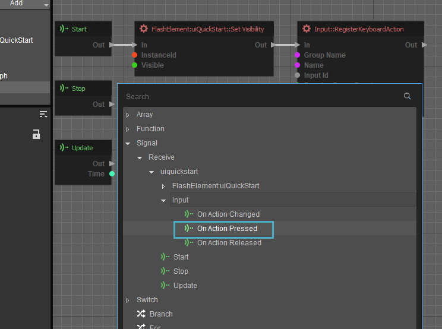
On Action Pressed - Also add a Functions → Standard → String → Equal and Branch node so that you can check the name of the action received, since we only want to react when the show_ui action is triggered.
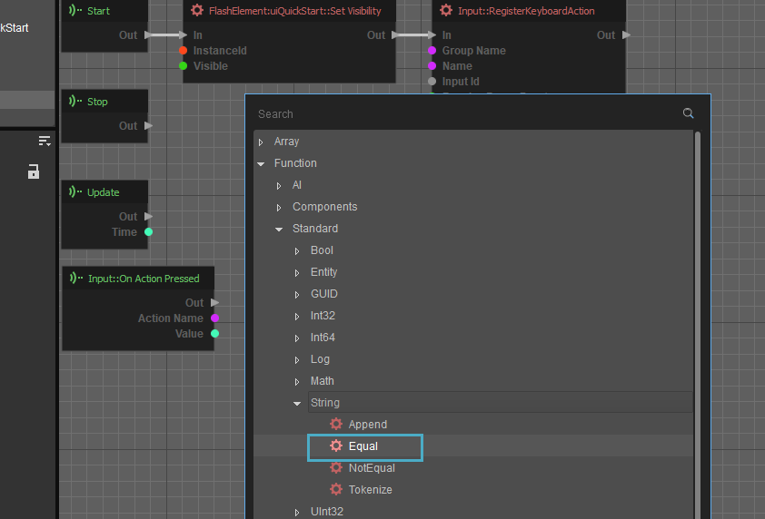
Equal node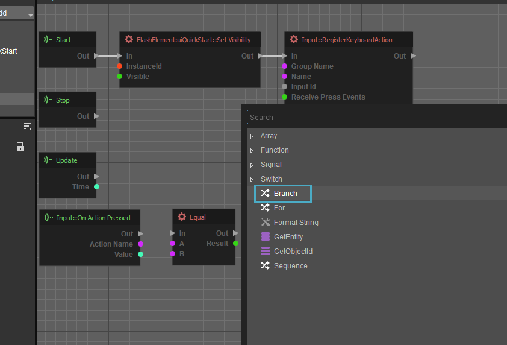
Branch node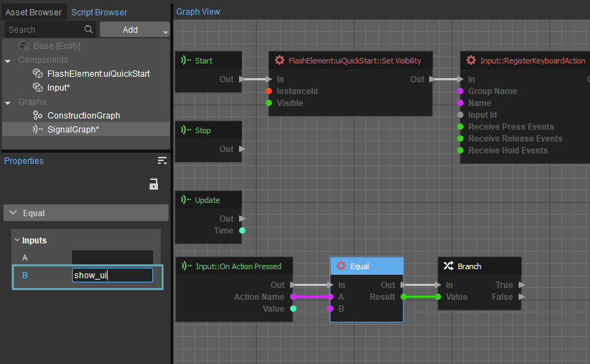
Ensuring we react only when show_ui is triggered - Finally, add the Functions → Components → FlashElement:uiQuickStart → Dynamic → UpdateScore node and set its Value input to 5; connect the UpdateScore's In input to the True output of the Branch node.
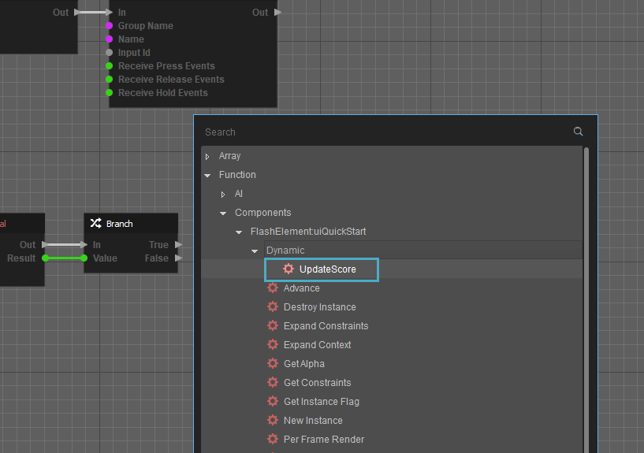
UpdateScore node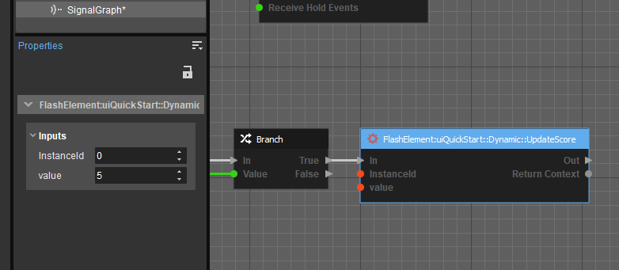
Set the Value input of the UpdateScore node to 5
Upon entering Game mode in the Sandbox Editor, you should see the UI display "Score: 0". After pressing the F key, you should see your new value shown in the UI score. 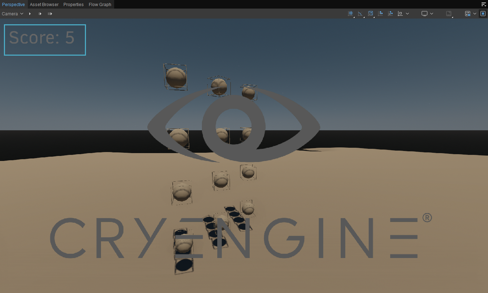
Press the F key to update the score